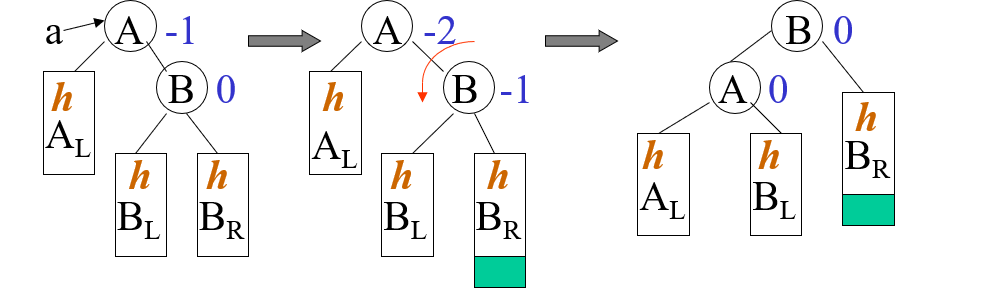
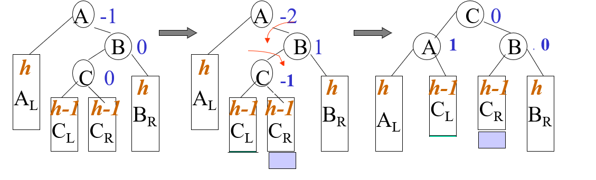

查找表
查找中涉及的概念和术语
术语：
-
查找表：同一类型的记录（数据元素）的集合
数据元素之间存在着比较松散的关系，为了提高查找的效率，可以在元素之间人为的附加某种特定的关系。
-
关键字：记录数据元素中的某个数据项的值
- 主关键字：该关键字可以唯一的标识一个记录
- 次关键字：该关键字不能唯一标识一个记录
-
查找：指定某个值，在查找表中确定是否存在一个记录，该记录的关键字等于给定值
-
静态查找：对查找表的查找仅是为了查找，不改动查找表中的数据
-
动态查找：在查找的过程中同时插入不存在的记录，或者删除某个已存在的记录
-
查找成功：查找表中存在满足查找条件的记录
-
查找失败：查找表中不存在满足查找要求的记录
-
内查找：整个查找过程都在内存中进行
-
外查找：在查找过程中需要访问外存
-
平均查找长度ASL：查找方法时效的度量。或者更数学的，为确定记录在查找表中的位置，需将关键字和给定值比较次数的期望值。
查找成功时ASL的计算公式：
在公式中：是记录的个数，是查找指定记录的概率，查找指定记录所需的比较次数。
静态查找表
静态表这里是指在查找过程中表基本不会发生变化。
顺序表的查找
算法描述
遍历表进行查找。为了提高查找的效率，可以设置一个监视哨，查找是就不必检测位置是否越界。
int sequenceSearch(vector<int>& x, int target)
{
x.push_back(target);
int i = 0;
while (x[i] != target)
{
i++;
}
return i;
}
性能分析
- 当查找成功时，
- 当查找失败时，
有序表的查找
算法描述
采用二分查找。
int binarySearch(vector<int>& x, int target)
{
int low = 0;
int high = x.size();
while (low <= high)
{
int mid = (low + high) / 2;
if (target == x[mid])
{
return mid;
}
else
{
if (target < x[mid])
{
high = mid - 1;
}
else
{
low = mid + 1;
}
}
}
return -1;
}
性能分析
为了编译分析查找的过程，我们可以引入一颗二叉树来描述这个过程，这棵树也被称为判定树。

这颗二叉树的深度为
则成功查找时的平均查找长度为：
静态树表的查找
当有序表中各个记录查找的概率不同时，为了降低查找的平均查找长度，我们可以对判定树进行适当的调整。
静态最优查找树
查找性能最优的判定树。
对于最优查找树：其的带权内路径长度之和PH为最小值：
在公式中值得指出参量时，这个数的定义为，c是一个常数，p_i是这个节点被查找的概率。
构造最优查找树的原则是：
- 最先访问的节点是访问概率最大的节点
- 每次访问应使节点两边尚未访问的节点的被访概率之和尽可能的相等
静态次优查找树
但是在实际工作中，构造一颗最优的查找树往往是困难的。但是我们有一种方法可以构造一棵次优的查找树。这棵树的特点是其的PH值近似为最小，但是比静态查找树更加的易于查找，构造所需要的时间很短，而且查找的性能同最优树之间只存在1%~2%之间的差距。
下面给出构造次优静态查找树的方法：
现在已经有了有序排列的记录序列:
-
对序列中所有的节点计算其的
在序列中找到最小的节点作为根节点。
显然，这里主要的困难就是计算，我们这里介绍一种可以简化计算的方式：
首先计算每个节点的累计权值和：
将每个节点的累计全权值和用一张表存起来，而且
-
对根节点左右两边的列表递归操作
索引顺序表的查找
当有序表中的元素是分块有序的时候，我们可以建立索引表。首先在索引表中利用顺序或者二分查找知道找到对应的分块，再在对应的分块中寻找对应的记录。
性能分析
需要注意的是，计算索引查找的平均查找长度需要计算两部分的平均查找长度。首先是在索引表的平均查找长度，然后是在分块中的平均查找长度。
由于对于索引表和分块中的查找都有着两种不同的查找方式——顺序查找和折半查找，这让索引顺序表的平均查找长度的计算变得比较复杂，不过大致的结论是索引查找的性能大致介于顺序查找和折半查找之间。
在索引查找中还有一些值得注意的点：
- 在实际使用中，不同分块的大小不一定相同
- 分块查找的代价是附加索引表的空间和建立索引表的时间开销
- 在每次主表发生变化之后的索引都得重新建立。为此，我们可以在主表的每个分块之后预留一部分的空间，以便在改变主表之后能够只修改对应分块的索引
动态查找表
就是在查找的过程中，表可能频繁的进行插入和删除操作。
二叉排序树
二叉排序树的定义是一个递归的定义。一颗二叉排序树或者是空树，或者是满足以下性质的二叉树：
- 如果其左子树非空，那么左子树上所有结点的值均小于根节点的值
- 如果其右子树非空，那么右子树上所有节点的值都大于根节点的值
- 其左右子树如果存在都是一颗二叉排序树
按照如上定义设计出来的二叉排序树将具有一个非常不错的性质：按照中序遍历之后得到的序列就是一个递增的序列。
二叉排序树上的操作
通常，我们和二叉树一样利用二叉链表来储存二叉排序树。
typedef struct tree {
int data;
struct tree* lChild;
struct tree* rChild;
} BinarySearchTree;
typedef BinarySearchTree* BinarySearchTreeP;
首先介绍搜索操作：
BinarySearchTreeP search(BinarySearchTreeP tree, int target)
{
if (tree = nullptr)
{
return nullptr;
}
if (tree->data == target)
{
return tree;
}
else if (target < tree->data)
{
return search(tree->lChild, target);
}
else
{
return search(tree->rChild, target);
}
}
然后是在二叉树中插入一个元素的操作，在插入元素操作中会用到搜索操作的一个变型版：
/**
* 在二叉树中查找元素
*
* @param tree 当前查询的二叉树节点
* @param target 查找的目标
* @param father 当前节点的父节点，初始时为空
* @param result 查找的结果 当查找成功时指向该节点，当查找失败时指向查找路径上的最后一个节点
*
* @return 查找的结果状态
*/
bool search(BinarySearchTreeP tree, int target, BinarySearchTreeP father, BinarySearchTreeP& result)
{
if (tree == nullptr)
{
result = father;
return false;
}
if (target == tree->data)
{
result = tree;
return true;
}
else if (target < tree->data)
{
return search(tree->lChild, target, tree, result);
}
else
{
return search(tree->rChild, target, tree, result);
}
}
bool insert(BinarySearchTreeP& tree, int value)
{
BinarySearchTreeP result;
if (!search(tree, value, nullptr, result))
{
BinarySearchTreeP node = (BinarySearchTreeP)malloc(sizeof(BinarySearchTree));
if (node == nullptr)
{
// 空间分配失败
return false;
}
node->data = value;
node->lChild = nullptr;
node->rChild = nullptr;
if (tree == nullptr)
{
tree = node;
}
else if (value < result->data)
{
result->lChild = node;
}
else
{
result->rChild = node;
}
}
else
{
return false;
}
}
当需要生成一颗新的二叉搜索树的时候，反复调用insert函数就可以了。
如果需要在搜索二叉树中删去一个节点，需要按照被删去节点的类型分类讨论：
- 叶子节点：修改父节点的指针就可以
- 只有左子节点：用左子树代替被删除的节点
- 只有右子节点：使用右子树代替被删除的节点
- 左右子节点都有：找到被删除节点的中序的后继或者是前驱节点，将该节点的值赋值给被删除的节点。如果该节点只有左子节点或者右子节点或者没有子节点，则删除该节点。
性能分析
在构造的二叉排序树的形态确定的时候，等概率查找，查找成功时：
- 最差的情况下：也就是构造为单支树：
- 在最好的情况下：构造为折半查找的判定树：
- 在随机的情况下：
平衡二叉树
或者是空树，或者是满足如下性质的二叉排序树：
- 左右子树的高度之差的绝对值不超过1
- 左右子树本身也是平衡二叉树
对于一棵有着个节点的二叉查找树的高度我们有如下的定理：
由公式不难发现，在最坏的情况下平衡二叉树的高度为，而完全平衡的二叉树的高度约为，因此平衡二叉树是一种十分接近于最优的平衡二叉树，平均查找长度和同数量级。
平衡二叉树的存储结构
我们首先定义平衡二叉树上的每个节点的平衡因子：该节点左子树的高度减去右子树的高度。
struct BSTNode
{
// 存储的数据
int data;
// 该节点的平衡因子
int bf;
// 左子树指针
struct BSTNode* lChild;
// 右子树指针
struct BSTNode* rChild;
};
typedef BSTNode BSTNodeT;
typedef BSTNodeP BSTNodeP;
平衡二叉树上的操作
查找操作和二叉排序上的一致。
下面是比较困难的插入操作：我们需要通过一个旋转的操作维持子树的平衡。
首先确定旋转的范围：在插入节点之后，找到离插入节点最近且平衡因子绝对值超过1的祖先节点，则以该节点为根的子树将是可能不平衡的最小子树，可将重新平衡的范围局限于这颗子树。
调整的规律为：
-
LL型平衡旋转——单向右旋：

-
RR型平衡旋转——单项左旋：

-
LR型平衡旋转——一次逆时针旋转和一次顺时针旋转

-
RL型平衡旋转——一次顺时针旋转和一次逆时针旋转

删除平衡二叉树的思路：
将删除节点转化为删除的节点最多有一个子节点的情形，即：如果有两个子节点，用其的中序前驱或者后继节点取代它，然后再删除这个节点。
如果在删除的过程中树的平衡性被破坏，利用上面提高的旋转方法回复树的平衡性。
B树（Balanced Tree）
B树就是一种平衡的多路查找。
一颗m阶B树，或者是空树，或为满足下列特性的m叉树：
- 树中每个节点最多有m课子树
- 如果根节点不是叶子节点，则最少有两颗子树
- 除根之外的所有非叶子节点最少有课子树
- 所有非叶子节点包含的信息数据。其中为节点中关键字的个数，为指向子树的指针，为关键字
- 所有叶子节点在同一层中，且不带信息
B树的用途
当内存中不可能容纳下所有的数据记录时，在磁盘等直接存取设备上组织动态的查找表。
- B树的根节点可以始终放在内存中
- 其余非叶子的节点放置在外存中，每一个节点可作为一个读取单位
- 选择阶次比较大的B树，降低树的高度，减少外存的访问次数
哈希表
在记录的存储地址和它的关键字之间建立一个确定的对应关系。在理想的情况下，不需要进行比较，直接存取就能得到所查的元素。
- 哈希表：一个有限的连续的地址空间，用以容纳按哈希地址存储的记录
- 哈希函数：记录的存储位置和它的关键字之间存在的对应关系
- 哈希冲突：对于不同的关键字，哈希函数得出的值相同
- 同义词：在同一地址出现冲突的各关键字
- 哈希地址：根据哈希函数和处理冲突的方法确定的记录的存储位置
- 装填因子：表中填入的记录同哈希表表长之间的比值，一般记作
哈希函数的基本构造方法
构造函数的原则：
- 算法简单、运算量小
- 均匀分布、减少冲突
-
直接定址法
这个方法计算简单，冲突最少。但是只有地址集合的大小等于关键字集合的大小时才可以使用
-
数字分析法
去关键字的若干数位作为哈希地址。
假设关键字集合中的每个关键字的数位都是由s位数字组成的，分析关键字集中的全体，并从中提取分布均匀的若干位或者他们的组合作为地址。
这个方法适用于能预先估计全体关键字的每一位上各种数字出现的频率。
-
平方取中法
取关键字平方后的中间几位作为哈希地址。“关键字的平方值”的目的是“扩大差别”，同时平方值的中间各位又能受到整个关键字各位的影响。
当关键字中的每一位都有某些数字重复出现频度很高的现象。
-
折叠法
将关键字分割为位数相同的几部分（最后一部分的位数可以不同），去这几部分的叠加和作为哈希地址
这个方法适用于关键字的数字位数特别多
-
除留余数法
m时哈希表的表长
p最好为素数，更有利于“散列”
-
随机数法
这个方法适用于关键字的长度不相等的时候
处理冲突的常用方法
开放定址法
这种方法又叫做空缺编址法。
在公式中，是哈希表的表长，是增量序列。当增量序列的设计不相同的时候，我们有着不同的开放定址法：
-
线性探测再散列：
这种方法的缺陷在于容易造成聚集现象——非同义词的地址也发生冲突。
-
二次探测再散列：
这种方法的缺陷是不容易探测到整个散列空间。
-
伪随机数探测再散列：
增量序列就是一个伪随机数序列。
-
双重散列函数探查法：
对于第二个散列函数的要求是：结果和互素。
- 当为素数时，可以取1到m-1之间的任何数，比如
- 当为2的幂时，可以去1到m-1之间的任何奇数。
开放定址法不适合执行删除操作。
再哈希法
在公式中为不同的哈希函数。
链地址法
为每个哈希地址建立一个单链表，存储所有具有同义词的记录。
- 冲突处理简单，无堆积现象，平均查找长度较短
- 适合于事先无法确定表长的情况
- 装填因子可以大于1，空间的利用率高
- 删除节点的操作易于实现
建立公共的溢出区
在主哈希表外，再分配一块区域储存同义词。
哈希表的ASL分析
在一般情况下，装填因子越小，哈希表中发生冲突的可能性越小，ASL就会越小，但是空间的利用率就会越低。利用装填因子我们可以得到如下的ASL计算公式：
-
线性探测再散列：
- 成功：
- 失败：
-
伪随机探测再散列：
- 成功：
- 失败：
-
链地址法：
- 成功：
- 失败：